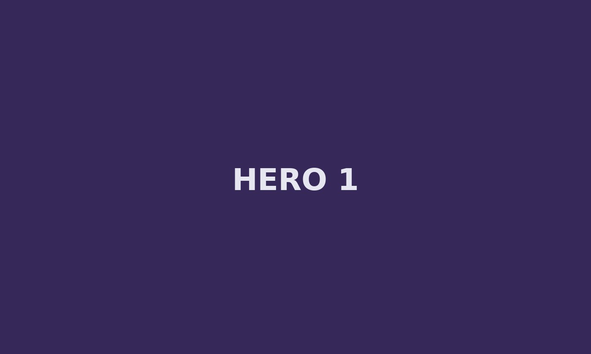

Exkluzivní přístup dostupný ve tvé oblasti právě dnes
Mimo IG WebView. Rychlé, bezpečné a bez rušivých překážek.
Odemknout přístup
⚡ bez registrace • šifrované připojení
✓
Bezpečné mimo IG
★
Hodnocení 4.9/5
🛡
Ověřený publisher
O projektu
Toto je čistě statická vizitka. Z hlavního CTA pokračuješ na “gate”, kde běží per‑device odpočet do 23:59, scarcity prvky a notifikace. Slouží k rychlému A/B testu mimo IG WebView.
